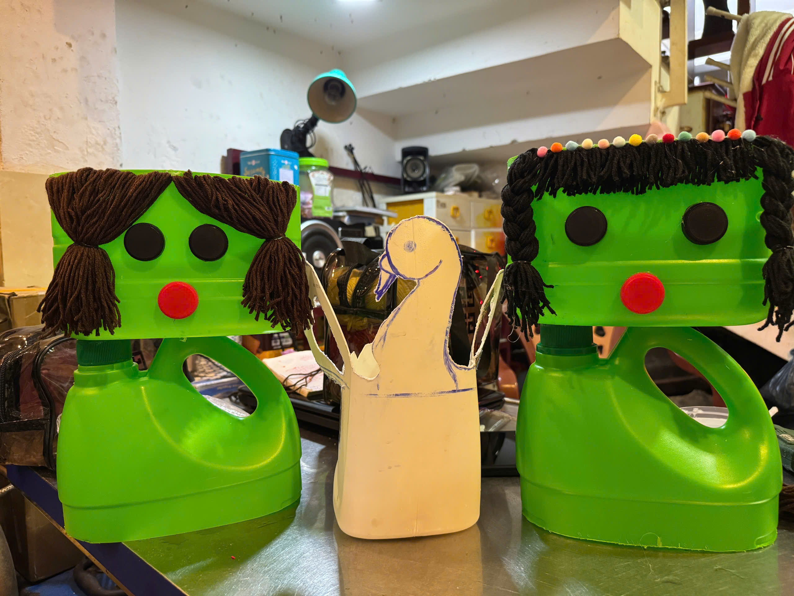
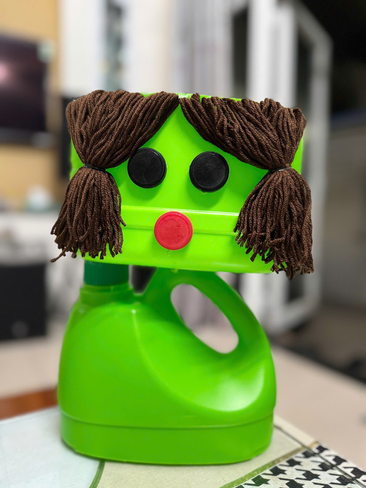
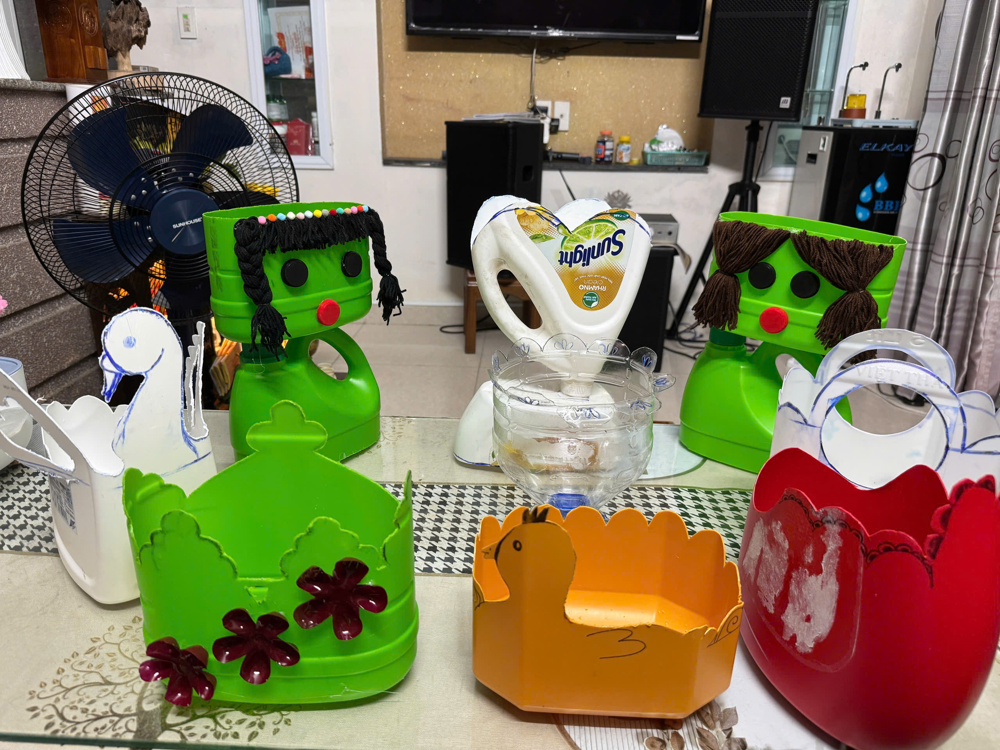

Thân thiện với môi trường • Dễ làm • Sáng tạo
Tái chế chai nhựa thành chậu cây là một hoạt động thú vị, giúp giảm thiểu rác thải nhựa, bảo vệ môi trường và tạo ra những sản phẩm handmade xinh xắn để trang trí không gian sống.

Thu thập chai nhựa đã qua sử dụng, chọn những chai còn nguyên vẹn, không bị móp hoặc nứt.
Rửa kỹ với xà phòng để loại bỏ nhãn dán và mùi, sau đó phơi khô hoàn toàn.
Dùng bút vẽ đường cắt (hình tròn, sóng hoặc hình con vật), rồi cắt cẩn thận theo đường vẽ.
Dùng đinh nóng hoặc dùi đục 4–6 lỗ nhỏ ở đáy chậu để nước thừa thoát ra.
Sơn màu, vẽ mặt con vật hoặc dán phụ kiện để chậu trở nên sinh động.
Đổ một lớp đất, đặt cây giống vào giữa và nén đất nhẹ nhàng.
Tưới nước vừa phải, đặt chậu ở nơi có ánh sáng gián tiếp và theo dõi sự phát triển.

Hãy biến chai nhựa thành những chú thú dễ thương!

Hoạt động này không chỉ giúp giảm rác thải nhựa mà còn khơi dậy sự sáng tạo, rèn luyện kỹ năng thực hành và góp phần làm cho Trái Đất của chúng ta xanh hơn mỗi ngày.